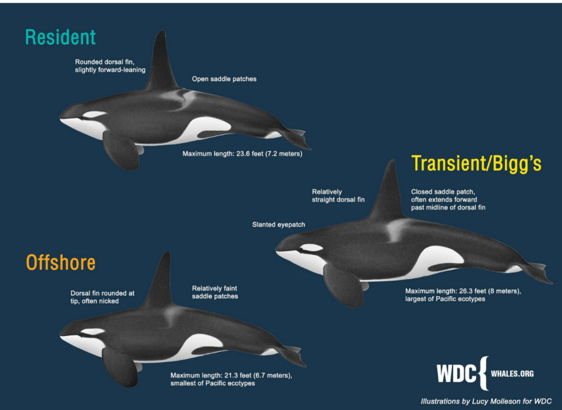
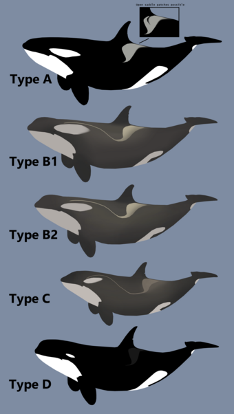

Orcas, also known as killer whales, are classified into different types based on their physical characteristics, behaviors, and diets
Resident: These orcas have rounded dorsal fins, wide saddle patches, and live in large groups close to shore. They primarily eat fish and are relatively easy to study.
Transient: Also known as Bigg's orcas, these orcas have straighter dorsal fins, solid white saddle patches, and live in smaller groups. They primarily eat seals, sea lions, dolphins, and other marine mammals.
Offshore: These orcas have rounded dorsal fins, a variety of saddle patch patterns, and are generally smaller than the other types. They live in large groups and have the largest range, which can occur up to 9 miles offshore. They primarily eat other whales, sharks, and marine mammals.
Freshwater rivers:Rarely, orcas have been seen in freshwater rivers, such as the Rhine, the Thames, and the Elbe. One orca was even seen traveling 110 miles up the Columbia River in pursuit of fish.
